Help guide
Step by step, for Dictum 1.2 on Windows. Last updated .
Dictum types what you say into the program you are using. You hold down a key, speak, and let go. Your words appear wherever you were typing. This guide goes one step at a time. You do not need to know anything about computers to follow it.
1. Get Dictum
Dictum works on Windows 10 and Windows 11 PCs. Get it free from the Microsoft Store.
- Click Get Dictum from the Microsoft Store. Or open the Microsoft Store app on your PC, search for Dictum, and choose the one by Kynni.
- Follow the Store’s steps to install it.
- To start Dictum, click Start, type Dictum, and press Enter.
The Store installs everything Dictum needs, and keeps Dictum up to date for you.
On a work PC, the Microsoft Store may be turned off. If it is, ask whoever looks after your computers.
2. The first time you start Dictum
The first time Dictum starts, a window called Welcome to Dictum opens. It takes you through a few short steps. The top of the window says which step you are on, for example “Step 2 of 6: Model files”.
Click Next to go on. Click Back to go back.
-
Welcome
The window explains how Dictum works. Click Next.
-
Model files
A model is the file that turns speech into text. Dictum keeps its models on this PC. The one that comes with Dictum is about 150 MB (megabytes). Adding more models can take several gigabytes more.
Dictum suggests a folder and shows how much free space that drive has.
- To keep the suggested folder, click Next.
- To use another drive, click Choose another drive or folder…. Pick a folder. Then click Next.
Changed your mind? Use the suggested folder puts it back. If Dictum already knows where to keep its model files, it skips this step.
-
Speech model
Usually this step says “The Standard model is included and ready.” Click Next.
If it shows choices instead, pick one. Bigger models are more accurate but slower. A model that is not on this PC yet is downloaded when you reach the end of these steps. You can change this later in Settings > Models.
-
Your hotkey
The hotkey is the key you hold down while you speak. Unless you change it, it is the Ctrl key on the right-hand side of the keyboard (Right Ctrl).
- Press the key now. The box shows its name, for example Right Ctrl, and a light comes on while you hold it.
- To choose a different key, press that key instead. A mouse button other than the left one works too.
- Click Use this hotkey.
-
Microphone
- Choose your microphone from the list. System default suits most people.
- Say a few words.
- If it says “Heard you.”, your microphone works. Click Next.
If it says “No microphone found.”, plug one in, or on a remote or virtual desktop turn on microphone redirection. Then click Back, then Use this hotkey.
If it says “Nothing heard.”, check that the microphone is plugged in and not muted. Speak again; when Test again appears, click it. You can also click Skip. If Dictum hears nothing when you dictate, it will tell you.
-
Try it
- Click in the practice box.
- Hold your hotkey.
- Say a sentence.
- Let go. Your words appear in the box.
Dictum then says: “Everyone's accent, voice and microphone are different. The Standard model works well for most people. If words come out wrong, choose More accurate in the Simple view of Settings > Models, or press Calibrate my voice to find which model hears you best.” (See section 4.)
Click Finish.
If you close the window early, Dictum uses its usual settings for the steps you missed. You can change every one of them later in Settings.
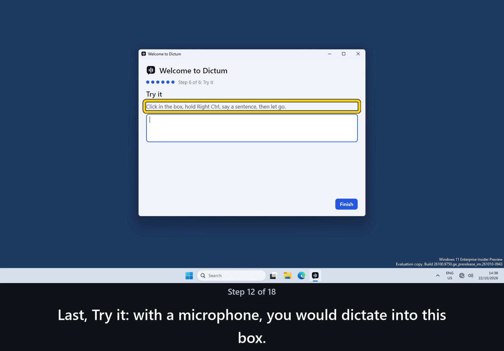
PlayStop
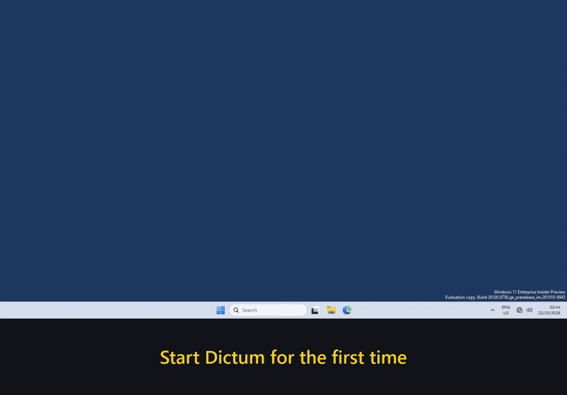
3. Dictate: hold, speak, let go
- Click where you want the words to go, for example in an email.
- Hold down the Dictum key. Unless you changed it, this is the Ctrl key on the right-hand side of the keyboard. This key is called the hotkey.
- Speak in your normal voice. A small bar above the taskbar shows that Dictum is listening. The taskbar is the strip along the bottom of the screen.
- Let go of the key. A moment later, your words appear where you clicked.
In that moment, three things happen. First, your voice is turned into text on this PC by a speech model. A speech model is a program that has learned what spoken words sound like. Next, the text is tidied up: punctuation and capital letters go in, and ums and ahs come out. Last, the text is pasted where you clicked, as if you had typed it.
The tidying is called clean-up. You can turn it off (see the clean-up question).
Say “new paragraph” to start a new paragraph (with Tidy my words, in English).
Talking for a while? Use hands-free
- Tap the hotkey twice, quickly. Dictum keeps listening without you holding the key.
- Speak. Your words appear each time you pause.
- Tap the hotkey once more to stop.
Hands-free stops by itself after 5 minutes. To change this, open Settings > General and change Hands-free stops after.
Changed your mind? Press Esc
Press Esc before your words appear, while you are holding the key or just after you let go. Nothing is typed.
In hands-free, Esc stops listening. What is already typed stays. What you said since the last pause is dropped.
Turn Dictum off for a while
Open the Dictum menu. Use the on/off switch at the top right of the Dictum menu.
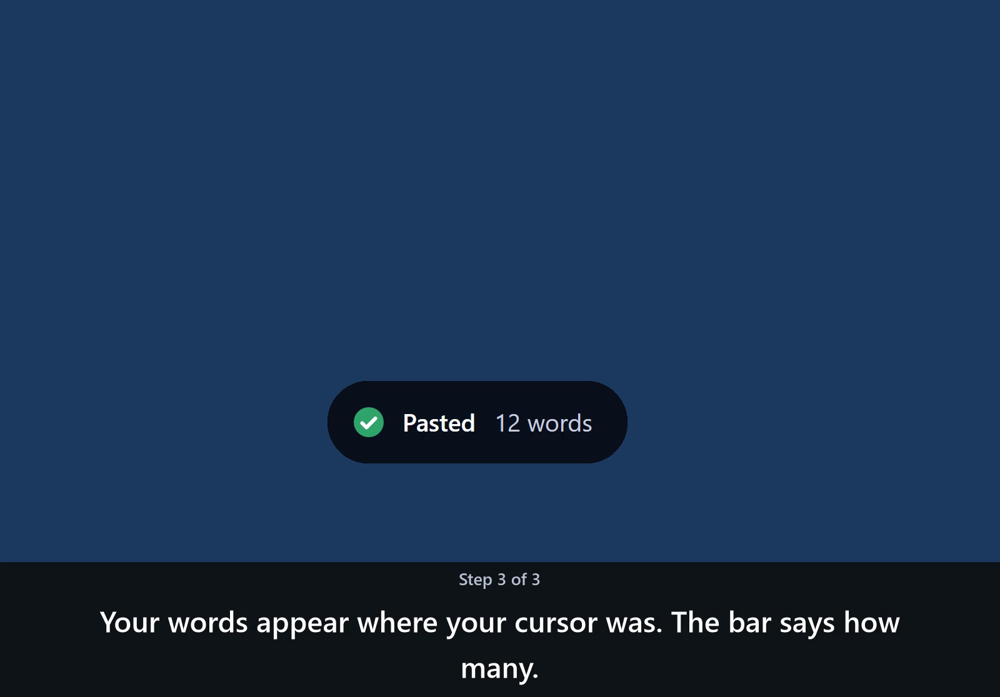
PlayStop
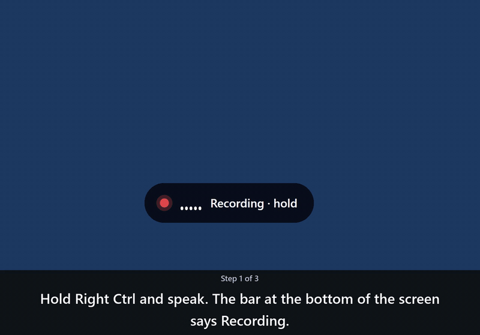
4. Why Dictum hears some people better than others
Everyone's voice, accent and microphone are different, so a speech model hears some people better than others.
For English, the speech model that comes with Dictum is a good place to start: it is Standard in Settings > Models. For other languages, Standard is a multilingual model, a download you choose.
If words often come out wrong, try these, in order.
Check your microphone
- Keep the microphone close to your mouth. Speak at your normal speed.
- Open Settings > Microphone.
- Choose your microphone from the list.
- Click Test microphone and speak. The bars move when Dictum hears you.
Find the model that hears you best
Not sure which one to choose? Open the Dictum menu and choose Calibrate my voice. You read ten short sentences aloud, and Dictum tells you which of the speech models on this PC hears you best.
- Open the Dictum menu.
- Click Calibrate my voice.
- Dictum shows a short sentence. Click Record.
- Read the sentence aloud in your normal voice.
- Click Stop. The next sentence appears.
- Do the same for each sentence. There are ten.
- Click Run test.
- Dictum shows which of the speech models on this PC hears you best.
Calibrate my voice measures the models. It does not change them. Nothing is uploaded: the recordings stay in Dictum's folder on this PC (Settings > Storage lists it), so the test can be re-run when you add a model. To see them, click Open the recordings folder.
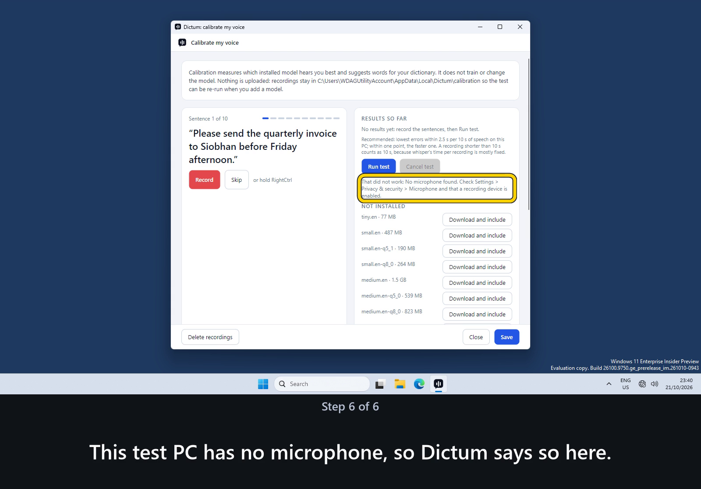
PlayStop
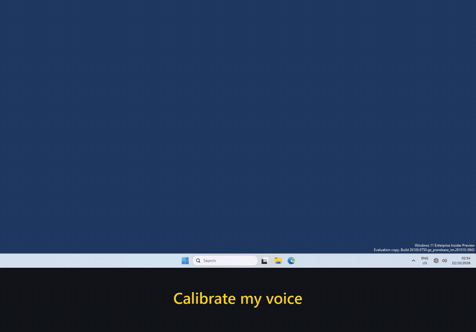
Choose a more accurate model
- Open Settings > Models.
- Find More accurate.
- Click Download… next to More accurate. If that model is already on this PC, the button says Use instead.
- A window asks to download it. Click Download.
- When the download has finished, More accurate shows In use instead of a button.
If words often come out wrong, open Settings > Models and choose More accurate, or Most accurate where it is listed. These are bigger speech models: more accurate, but slower, and each one is a download you choose. To see every model by its name and size, choose Advanced at the top of that page.
Most accurate needs a strong PC, or patience. A graphics card helps a lot. A graphics card is the part of a computer that draws the screen; it is also called a GPU. On a PC without one, Most accurate can take longer than you spoke.
Teach Dictum a word
If a name or word keeps coming out wrong, see how to add words and spellings.
5. Simple and Advanced
At the top of Settings > Models there is a switch with two sides: Simple and Advanced. Dictum starts on Simple.
- Simple shows what each choice means.
- Advanced shows every model and its details.
What Simple shows
For the speech model, up to three choices:
- Standard: Included. Works well for most people.
- More accurate: Bigger download, a bit slower.
- Most accurate: Best results. Needs a strong PC or patience.
What each line says depends on your PC. On a PC without a graphics card, Simple says so: the bigger choices take longer there.
For clean-up (the step that tidies your words after they are heard), two choices:
- Tidy my words (recommended): Fixes punctuation and removes ums and ahs. Runs on this PC.
- Off: Paste what was heard. Only your own corrections, snippets and the profanity filter (if on) still apply.
Each choice has a button on the right. Use switches to it. Download… fetches it first. The choice Dictum is using now shows In use instead of a button.
What Advanced adds
Advanced lists every speech model and clean-up model, with its details. It also lets you choose a model file of your own. Most people never need it.
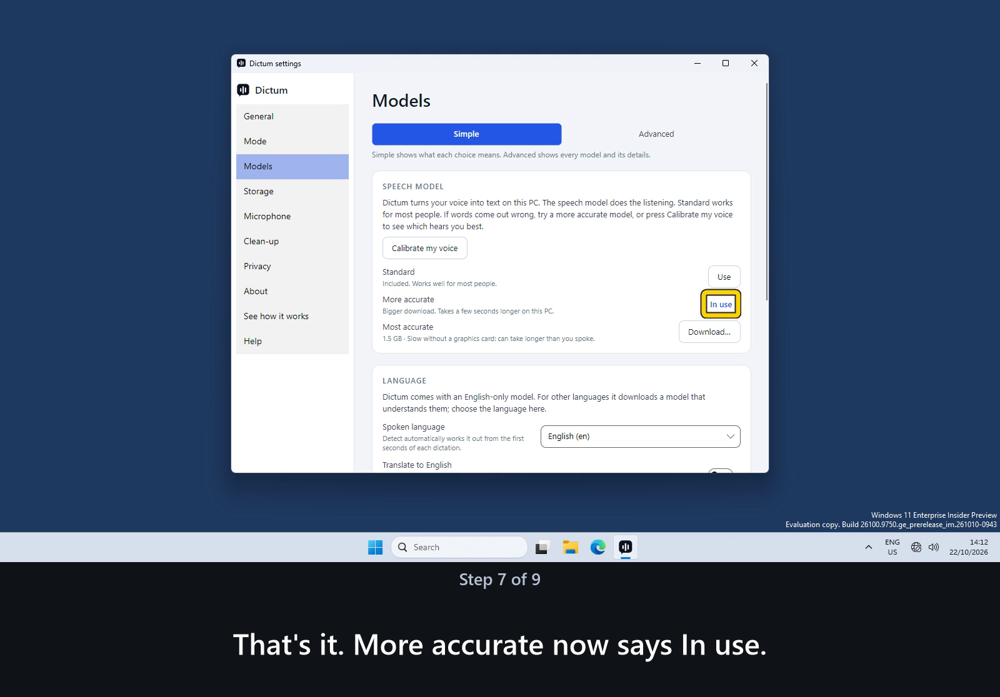
PlayStop
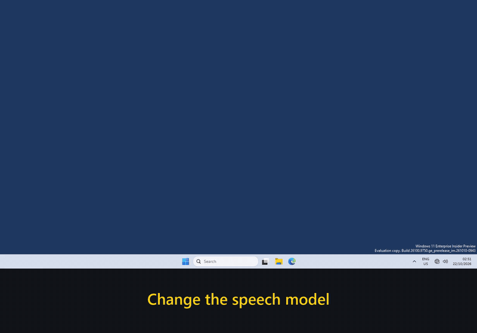
6. Where the model files live
Settings > Models shows the Model folder. This is where Dictum keeps the models you download. The speech model that comes with Dictum is about 150 MB and is kept with the program itself.
Bigger speech models and AI clean-up are downloads you choose. If you add the largest, most accurate ones, they can take up several GB (gigabytes). Settings > Storage lists every model with its size and its folder.
Keep the models on another drive
- Open Settings > Models.
- Scroll down to Model folder.
- Click Browse….
- Choose a folder on the other drive, for example
D:\Dictum models. - Click Select Folder.
New downloads now go to that folder. Changing the folder does not move any files.
- Models in Dictum's usual folder are still found.
- Models in a folder you chose earlier are not found any more. Copy them into the new folder first, or download them again.
To free up space on the first drive when you move from Dictum's usual folder, copy the models across, then delete the old copies in Settings > Storage, with Delete… next to each one.
A folder on a network drive works, but models load slowly from it. A folder on this PC is faster. To go back to the usual folder, click Use default.
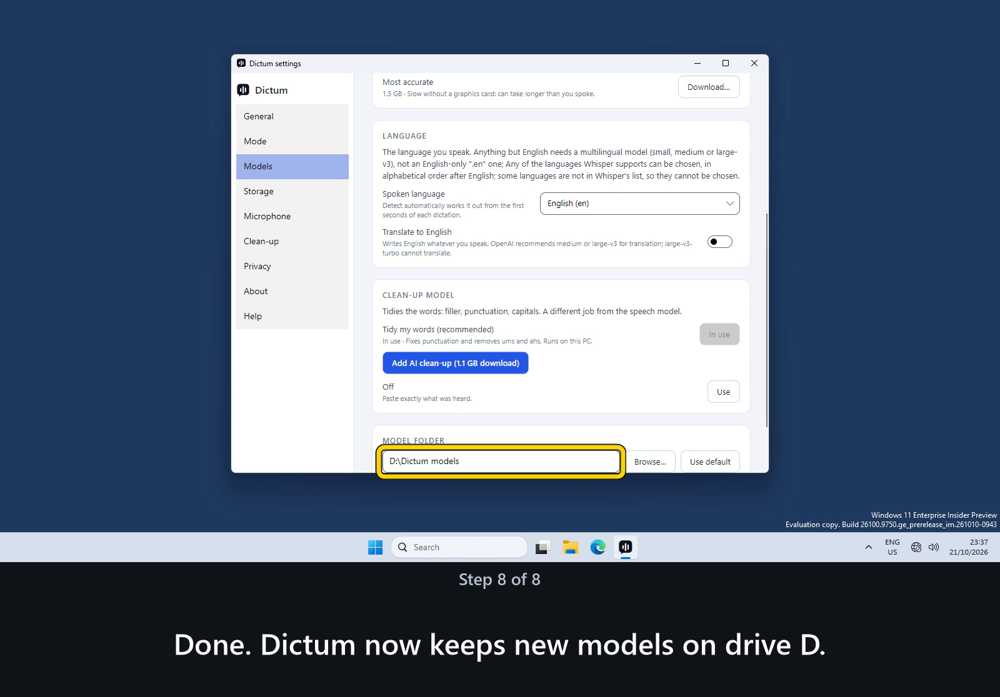
PlayStop
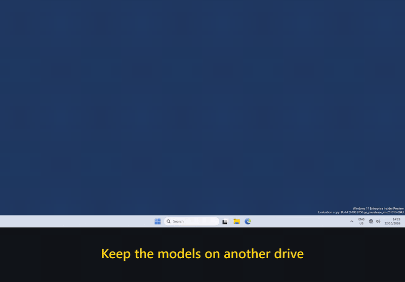
7. Your privacy
Dictum turns your voice into text on this PC, then throws the recording away. Your voice never leaves this PC.
All of this happens on this PC. Nothing you say is sent anywhere unless you turn on cloud clean-up or cloud speech in Settings > Clean-up, and it is off unless you turn it on. If you turn it on, the text of each dictation and the words in your dictionary go to the service you chose; your voice still stays here unless you also turn on cloud speech.
In the words of our privacy policy:
We collect nothing. Dictum has no account, no analytics, no telemetry and no crash reporting. We never receive your audio or your text.
Read the privacy policy. It is short, and it names every address.
8. Optional: turn on cloud clean-up
Cloud clean-up is an advanced option, and it is off unless you turn it on. If you turn on cloud clean-up, the text of each dictation and the words in your dictionary leave this PC and go to the service you choose, to be tidied; your voice still stays here unless you also turn on cloud speech. Most people do not need it: Tidy my words runs on this PC.
Before Dictum sends text to a service off this PC, it shows a warning. For Anthropic, it says:
WARNING: this is an advanced option and it is less private than local clean-up. Your text leaves this PC to be processed on api.anthropic.com's servers. Dictum encrypts the connection (HTTPS) but cannot see, validate or certify how that service stores, protects or uses your text, or who else can read it. Do not dictate confidential, personal or client information with cloud clean-up on unless you have checked that service's terms yourself.
Dictum can use Anthropic, OpenAI, Google Gemini or your own server. For Anthropic, OpenAI and Google Gemini, you need your own account with that service and an API key.
Get a key
To get a key, sign in to the service's website and create an API key. The key is like a password: keep it to yourself.
Save the key, then switch it on
- Open Settings > Clean-up. Under Cloud clean-up, choose your service in the Service list: Anthropic (Claude), OpenAI, Google Gemini, Ollama on this PC, or Custom server (OpenAI-compatible) for your own server. For your own server, also type its address in Server address and its model name in Model. The line under Model says which name its key needs.
- Click Open the settings folder. File Explorer opens Dictum's settings folder.
- Press Ctrl+L. The folder's address shows, highlighted, at the top of that window.
- Press Ctrl+C to copy the folder's address.
- Open Notepad: click the Start button, type Notepad, then press Enter.
- Type one line:
ANTHROPIC_API_KEY=your-key-here, with your own key in place ofyour-key-hereand no spaces. For OpenAI, the line startsOPENAI_API_KEY=; for Google Gemini,GEMINI_API_KEY=; for your own server, if it needs a key,LLM_API_KEY=. If you use more than one service, put each on its own line. - In Notepad, click File.
- Click Save as.
- Open the Save as type list.
- Choose All files.
- Click in File name.
- Press Ctrl+A to select what is there.
- Press Ctrl+V to paste the folder's address.
- Type
\.envstraight after it. - Click Save.
The file must be called .env exactly: a dot, then env, with nothing after it. A file called .env.txt is not read. In the folder, the Type column beside .env says ENV File, not Text Document.
- Go back to Settings > Clean-up and click Use cloud clean-up… to switch it on. For a service off this PC, Dictum then says what it will send and to whom, with the warning above. Read it. Click Allow cloud clean-up only if you agree. Nothing is sent until you do.
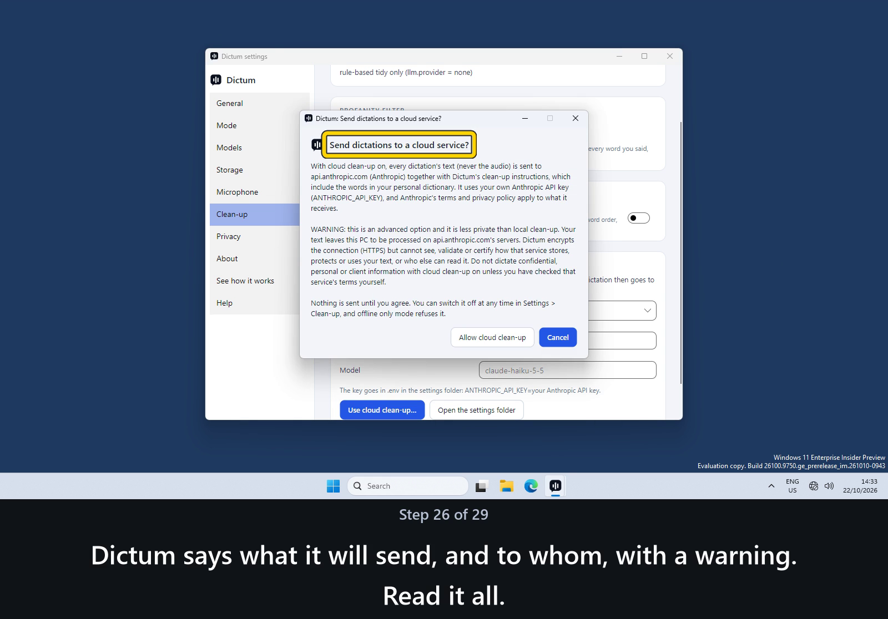
PlayStop
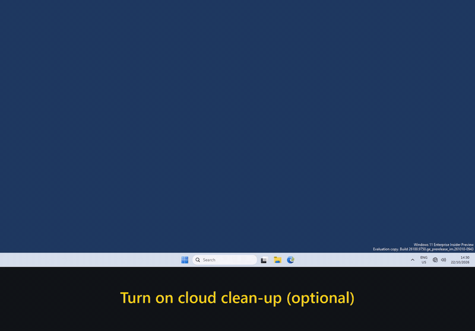
Is it working?
When Dictum has found your key, the Cloud clean-up card on that page starts with "On: the text of each dictation is sent to" and names the service, and the Dictum menu says "Cloud clean-up on · text leaves this PC". Dictum cannot check that the key itself is right: if your dictations come back only lightly tidied, check the key.
If the card says "On, but waiting for your …", Dictum cannot find your key. For OpenAI, for example, it says "On, but waiting for your OPENAI_API_KEY: nothing is sent until you add it to .env." Check the file's name, and the line in it.
Turn it off
To turn it off, open Settings > Clean-up and click Switch cloud clean-up off. Your dictations are tidied on this PC again.
Dictum reads your key only from the .env file (or from a Windows environment variable). It never saves the key in its settings, and never shows it on screen or writes it in its log.
9. Free
Free: no subscription, no account, no ads, no analytics, no telemetry.
The base product stays free to keep on your PC; optional paid extras may come later.
There is no charge and no word limit. Dictum is open source, which means anyone can read the program's code. It is made by Kynni Pty Ltd and shared under the MIT licence.
10. Send feedback or report a problem
Dictum sends nothing by itself. Instead, it opens a new email in your own email program. You can read and change it before you send it.
Send feedback or suggest a feature
- Open the Dictum menu.
- Click Help.
- Click Send feedback or suggest a feature. A new email opens, with the version of Dictum, your Windows build and the models in use filled in.
- Write what you would like to say.
- Send it.
Report a problem
- Open Settings > About.
- Click Report a problem. A new email opens, with the version and models filled in. Nothing you dictated is attached.
- Say what happened, and what you expected.
- Send it.
Email support on the Help page opens the same email.
No email program?
Write to hello@kynni.com.au from any email account. Tell us which version of Dictum you have. It is shown in Settings > About.
11. Questions and answers
Click a question to see its answer.
Where does my voice go?
Nowhere. Dictum turns your voice into text on this PC, then throws the recording away. It never saves your voice to a file and never sends it anywhere unless you turn on cloud speech.
The only recordings Dictum keeps are the ones you make on purpose in Calibrate my voice. They stay on this PC until you delete them.
If you turn on cloud clean-up (it is off unless you turn it on), the text of each dictation, and the words in your dictionary, are sent to the service you chose. Your voice still stays here unless you also turn on cloud speech.
Why did it type the wrong words?
Dictum can mishear words, just as people can. These things help:
- Keep the microphone close to your mouth, and speak at your normal speed.
- If a name or word keeps coming out wrong, add it with Dictionary in the Dictum menu. (How to add a word.)
- To teach Dictum a fix, choose Fix last dictation in the Dictum menu. Correct the text, tick the changes you want kept, then choose Save corrections. Dictum makes that fix from then on.
- For better accuracy overall, see "Why Dictum hears some people better than others" above.
It says "Mic error" or "No sound from mic", or nothing happens when I talk. What do I check?
If Dictum shows "No sound from mic", it says: Dictum is not hearing anything. Check that the microphone is plugged in and not muted. On a remote or virtual desktop, microphone redirection must be on.
If Dictum cannot find a microphone at all, it says: No microphone found. Plug one in, or on a remote or virtual desktop turn on microphone redirection, then try again.
- Check the microphone is plugged in, switched on and not muted. Many headsets have a mute button.
- Open Settings > Microphone. Choose your microphone from the list, then choose Test microphone and speak. The bars move when Dictum hears you.
- In Windows Settings, go to Privacy & security > Microphone. "Microphone access" and "Let desktop apps access your microphone" must both be on.
- On a remote or virtual desktop (a computer you use over the internet or your office network), your own microphone has to be passed through to it. This is called microphone redirection, and it must be turned on. If you are not sure how, ask whoever looks after your computers.
Nothing happens when I press the key. What do I check?
- Open the Dictum menu. Check that the on/off switch at the top right of the Dictum menu is on.
- Check which key Dictum is listening for. Open Settings > General. The Press your hotkey box shows exactly what Windows receives when you press a key.
- Windows does not let Dictum type into a program running as administrator (with extra permissions). Try another program, such as Notepad.
- Open Settings > About and click Reload settings. This also sets up the hotkey again if Windows removed it.
My keyboard has no Ctrl key on the right. What do I do?
Choose another key. See How do I change the key I hold?
If you use a Mac to reach a Windows PC, choose the right Option or Command key as your hotkey.
How do I change the key I hold?
- Open Settings > General.
- Under Press your hotkey (the hotkey is the key you hold), choose Change…, then press the key you want.
- When Dictum shows its name, choose Use this hotkey.
Most keys work, and so do the side buttons on a mouse. The Fn key, Esc and Tab cannot be used, and neither can Enter or Space on their own.
How do I stop it listening?
Let go of the key. Dictum stops listening and types what you said.
To cancel instead, press Esc before your words appear, while you are holding the key or just after you let go. Nothing is typed. The program you are typing in also receives the Esc.
If you started hands-free (by tapping the key twice quickly), tap the key once more to stop. Esc also stops hands-free, and what is already typed stays. What you said since the last pause is dropped.
To turn Dictum off for a while, use the on/off switch at the top right of the Dictum menu.
Can I talk for a long time without holding the key?
Yes. Use hands-free.
- Tap the hotkey twice, quickly.
- Speak. Each time you pause, Dictum types what you said so far, while you keep talking.
- Tap the hotkey once more to stop. What you said since the last pause is typed last.
Hands-free stops by itself after 5 minutes. To change this, open Settings > General and change Hands-free stops after. You can choose from 30 seconds to 60 minutes.
Can I use it in Word, Outlook, Teams or a web browser?
Yes. Dictum types into almost any program where you can type, including Word, Outlook, Teams and web browsers. Click where the words should go first.
The exception is a program running as administrator (with extra permissions): Windows does not let Dictum type into it.
Dictum closed straight away when I opened it. What do I do?
Dictum 1.1.2 fixes a start-up crash on PCs without a working Vulkan graphics driver (the app closed before its tray icon appeared; it now runs the speech model on the CPU there). If Dictum closes on another PC, install the latest version from the Microsoft Store or from dictum.kynni.au.
If the Dictum menu, or Settings > About, shows a button called Try on the CPU, choose it. Dictum then runs the speech model on the computer's main chip (the CPU) instead of the graphics card. This can be slower.
If it still closes, email hello@kynni.com.au and tell us.
Does Dictum work on a virtual desktop, or on a PC with no graphics card?
Yes. A virtual desktop is a computer you use over the internet or your office network. The Microsoft Store listing says:
Runs on PCs without a graphics card and on Windows virtual machines over Remote Desktop with microphone redirection.
The note for Dictum 1.1.2 says:
Fixes Dictum closing straight away on PCs without a working graphics driver, such as virtual desktops.
On a virtual desktop, microphone redirection must be on. See the microphone question. Without a graphics card, the bigger models are slower. Standard is the quickest.
How much faster is Dictum with a graphics card?
Much faster, especially for the bigger models. Here is what one test PC measured on 15/10/2026, for the same 10-second recording. Your PC will differ.
- Standard: 0.26 seconds with the graphics card, 1.9 seconds without.
- The biggest model measured: 0.73 seconds with the graphics card, 20.1 seconds without.
That test PC had an NVIDIA Quadro RTX 4000 graphics card. Without a graphics card, Standard is the quickest choice.
Which languages can I speak?
Dictum can listen in 100 languages, English included. They are the languages supported by Whisper, the speech technology Dictum uses.
- Open Settings > Models.
- Find Language.
- Open the Spoken language list. It shows every language you can choose.
- Choose yours.
Speak another language? Pick it here and Settings > Models shows the right choices. Translate to English, in the same place, writes English whatever language you speak.
How do I teach Dictum a name, or how to spell a word?
Add a word to the dictionary. Use this for a name, product or term that Dictum should spell your way.
- Open the Dictum menu.
- Click Dictionary. The Add a word window opens.
- Type the word or phrase.
- Click Add. It is used from the next dictation.
Teach Dictum a fix. Use this when Dictum keeps writing one word instead of another.
- Open the Dictum menu.
- Click Fix last dictation.
- Correct the text.
- Tick the changes you want kept.
- Click Save corrections. Dictum makes that fix from then on.
What does clean-up do? Can I turn it off?
Clean-up tidies your words after Dictum hears them. You choose it in Settings > Models, under Clean-up model.
Tidy my words, in Settings > Models, does the tidying. Unless the spoken language is set to English (or Translate to English is on), only the spacing is tidied. To paste what was heard with no tidying, choose Off there instead; only your own corrections, snippets and the profanity filter (if on) still apply.
- Tidy my words (recommended): Fixes punctuation and removes ums and ahs. Runs on this PC.
- Add AI clean-up: a bigger tidy-up model, about 1.1 GB to download, that also runs on this PC.
- Off: Paste what was heard. Only your own corrections, snippets and the profanity filter (if on) still apply.
What is cloud clean-up? Is it safe?
Cloud clean-up is an advanced option. It is off unless you turn it on, in Settings > Clean-up, after a consent step. While it is on, the text of each dictation, and the words in your dictionary, are sent to the service you chose. Your voice still stays on this PC.
Dictum shows this warning while it is on:
Advanced option: your text leaves this PC. Dictum does not validate or certify how that service handles it.
Most people do not need it. Tidy my words runs on this PC.
How do I turn on cloud clean-up?
Cloud clean-up is an advanced option, and it is off unless you turn it on. If you turn on cloud clean-up, the text of each dictation and the words in your dictionary leave this PC and go to the service you choose, to be tidied; your voice still stays here unless you also turn on cloud speech. Most people do not need it: Tidy my words runs on this PC.
To get a key, sign in to the service's website and create an API key. The key is like a password: keep it to yourself.
Then save the key in a file called .env in Dictum's settings folder, and switch cloud clean-up on in Settings > Clean-up. The steps, with a moving picture, are in Optional: turn on cloud clean-up.
Does Dictum need the internet?
Not for English: the Standard English model comes with Dictum, so you can dictate in English with the internet off. For any other language, Dictum needs the internet once, to download a model that understands it.
Dictum goes online only when you ask it to. That means three things:
- downloading a model you choose;
- checking for updates, in the direct-download version;
- cloud clean-up, if you turn it on.
Offline only, in Settings > Privacy, stops all three.
Does Dictum learn my voice?
No. Nothing is trained, and your voice never leaves this PC. Calibrate my voice measures which model hears you best, and can suggest words for your dictionary. It does not train or change the model.
What Dictum does keep is yours, in plain text files you can read, edit or delete: a dictionary of your names and terms, and corrections such as kinney => Kynni.
Where are the model files, and how big are they?
Settings > Models shows the Model folder, where Dictum keeps the models you download. The speech model that comes with Dictum is about 150 MB (megabytes) and is kept with the program itself.
Bigger speech models (More accurate and Most accurate) and AI clean-up (Add AI clean-up, shown under Tidy my words while the rule-based tidy is in use and the text is English) are downloads you choose. If you add the largest, most accurate ones, they can take up several GB (gigabytes).
To keep them on another drive, choose Browse… beside Model folder in Settings > Models. Settings > Storage lists every model with its size, and you can delete the ones you do not need there. (Step by step: Where the model files live.)
How do I get updates?
From the Microsoft Store: updates come from the Microsoft Store. You do not need to do anything.
From the direct download:
- Open Settings > About.
- Click Check for updates. Dictum checks only when you click it.
- If a newer version is out, click Open the download page.
- Install the newer version from that page. Your settings and models are kept.
How do I remove Dictum completely?
- Open Settings > Storage. At the bottom, choose Remove Dictum completely…
- Dictum first lists everything it will delete, with sizes. Read it, then click Continue.
- Then it asks you to type DELETE to confirm. Type DELETE, then click Remove everything.
It deletes its models, recordings, logs, settings, dictionary, corrections, snippets and saved keys, its Start menu shortcut and its start-with-Windows entry, then closes. If you got Dictum from the Microsoft Store, Windows Settings then opens so you can uninstall the app itself; otherwise Dictum removes the program too, unless its first warning says it cannot.
If I uninstall Dictum the usual Windows way, what does it leave behind?
Microsoft Store version: Windows deletes Dictum’s data when you uninstall it.
Direct download: uninstalling from Windows Settings > Apps asks whether to delete your models, settings and recordings too. If you say no, they stay on this PC.
To uninstall by hand, search Start for “Add or remove programs”, find Dictum and choose Uninstall. For the direct download, then delete the folders %APPDATA%\Dictum and %LOCALAPPDATA%\Dictum if they are still there.
A model folder you chose yourself stays after either kind of uninstall, from the Microsoft Store or the direct download. See the next question.
I keep my models on another drive. What happens to them when I remove Dictum?
Remove Dictum completely deletes Dictum’s own model files in that folder. The folder itself stays, and so does anything else you keep in it.
Uninstalling Dictum from Windows Settings > Apps leaves that folder alone, for the Microsoft Store version and the direct download. The direct download's uninstall question says: “Folders you chose yourself in Settings are not touched.”
Where is the log file?
The log is a record of what Dictum did, which helps when something goes wrong. It stays on this PC.
- Open Settings > About.
- Click Open log folder. There is one file for each day.
The log never contains what you said, unless you turn on Write dictated text to the log in Settings > Privacy. It is off unless you turn it on.
Is Dictum free?
Yes. See Free, above.
What does the name Dictum mean?
The name: a dictum is a saying, something stated. From the Latin dictum, “something said”.
Is there help inside Dictum itself?
Yes. Open the Dictum menu and click Help. It answers the most common questions, and it works without the internet.
Help starts with a list of its questions, under Questions on this page. Click a question to move down to its answer.
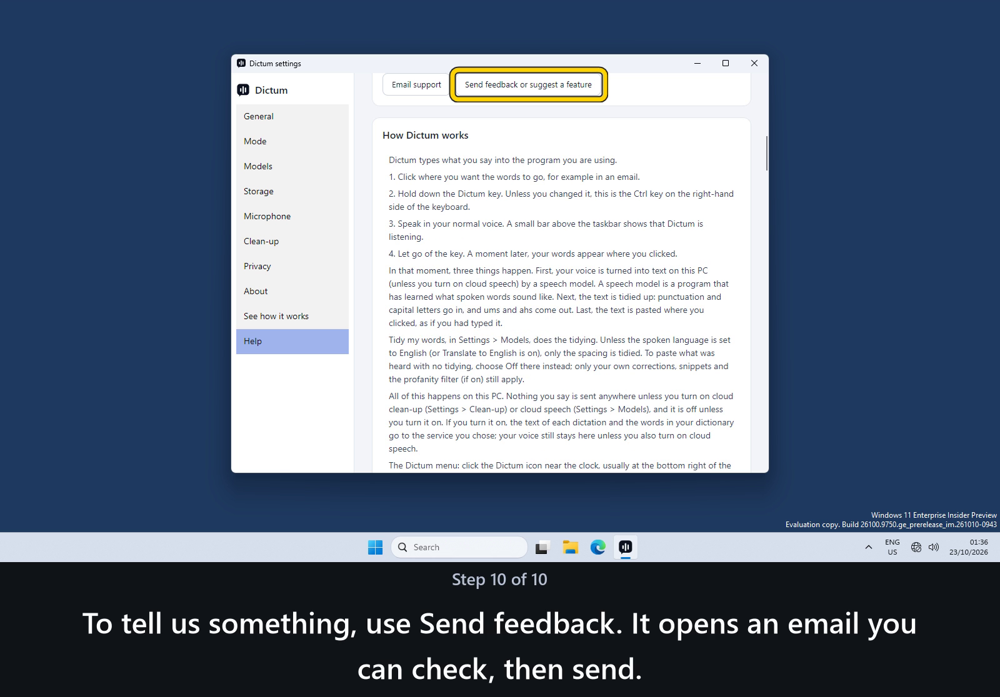
PlayStop
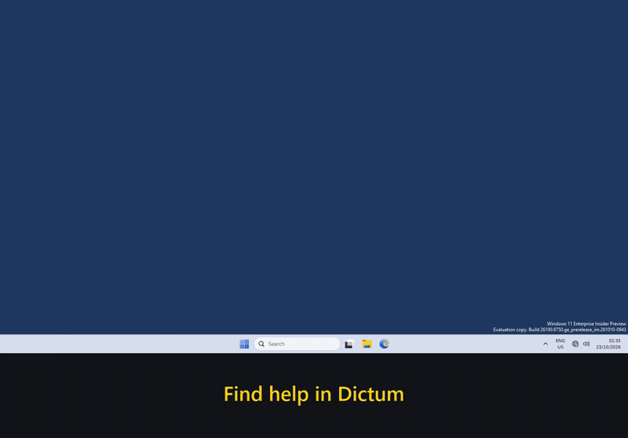
Its Open the full guide button opens this page in your web browser.